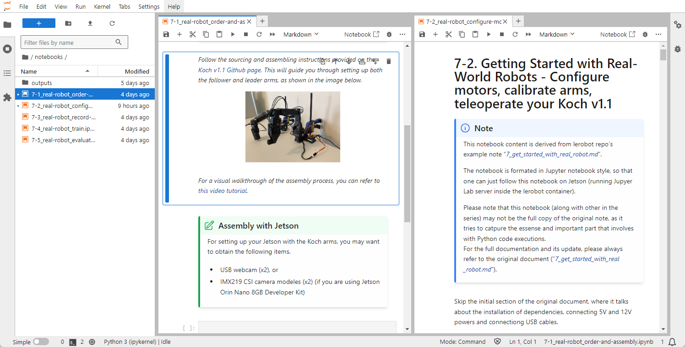
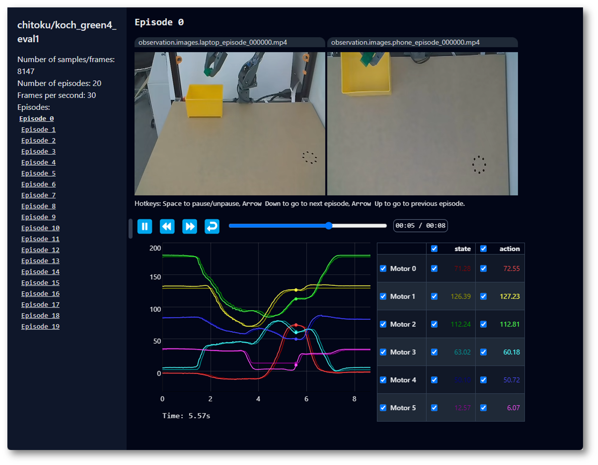
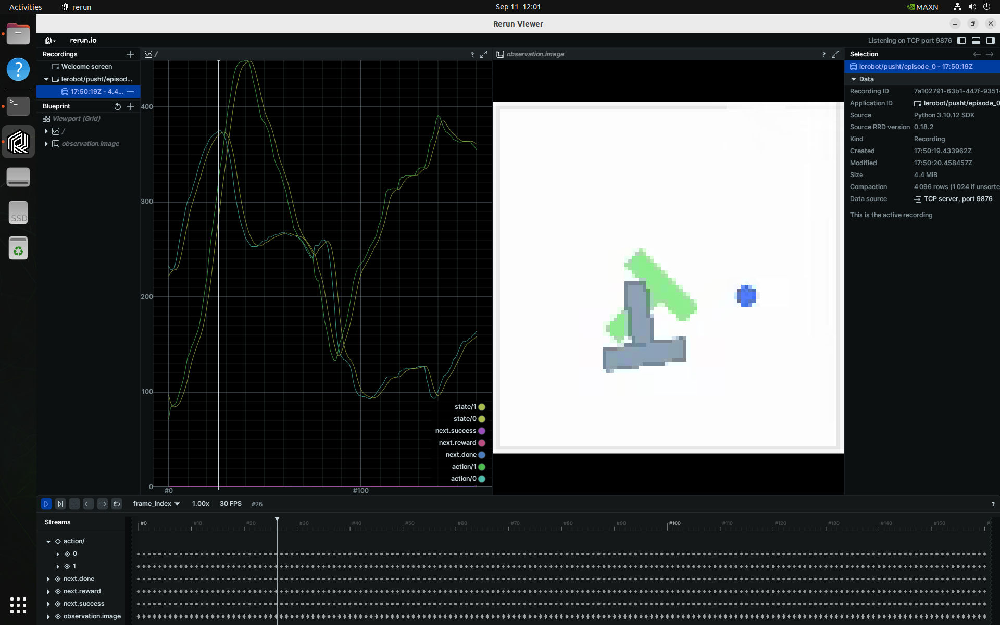

HuggingFace LeRobot
Let's run HuggingFace
LeRobot
to train Transformer-based
action diffusion
policies and
ACT
onboard NVIDIA Jetson. These models learn to predict actions for a particular task from visual inputs and prior trajectories, typically collected during teleoperation or in simulation.

What you need
-
One of the following Jetson devices:
Jetson AGX Orin (64GB) Jetson AGX Orin (32GB) Jetson Orin NX (16GB) Jetson Orin Nano (8GB) ⚠️
-
Running one of the following versions of JetPack :
JetPack 6 GA (L4T r36.3) JetPack 6.1 (L4T r36.4)
-
NVMe SSD highly recommended for storage speed and space
-
16.5GBforlerobotcontainer image -
Space for models (
>2GB)
-
-
Clone and setup
jetson-containers:git clone https://github.com/dusty-nv/jetson-containers bash jetson-containers/install.sh
Work with Real-World Robots - Before starting containers
This section gives the guide on how you can work through the LeRobot official example of
Getting Started with Real-World Robots (
7_get_started_with_real_robot.md
)
on your Jetson.
Tip
It's recommended to work on your Jetson in monitor-attached mode.
lerobot
is designed to show camera view in windows and playback TTS audio while capturing dataset, so it is more convenient to setup your Jetson with its monitor (and speakers) attached to Jetson.d
a. Check
jetson-container
's location

Through out the course of all the workflows of
lerobot
, we will be generating a lot of data, especially for capturing dataset.
We will clone the
lerobot
directory on host and mount the directory in the container to keep all the data persistant, but first make sure your
jetson-containers
directory is placed on your SSD, not on your eMMC or microSD card.
If you have created the
jetson-containers
directory on eMMC or microSD card (likely the case if you first set up your Jetson device without SSD first and later added SSD), then use the
rsync
command to move the entire directory under SSD mount point.
rsync -aHAX /home/jetson/jetson-containers/ /ssd/jetson-containers/
Then run the installer again.
bash /ssd/jetson-containers/install.sh
b. Create
lerobot
dir on host
As described above, we will setup the
lerobot
directory under
data
directory of
jetson-containers
for monting it inside the container so that generated data persist.
cd jetson-containers
./packages/robots/lerobot/clone_lerobot_dir_under_data.sh
./packages/robots/lerobot/copy_overlay_files_in_data_lerobot.sh
c. PulseAudio setup
LeRobot's dataset capture flow (
control_robot.py
) utilizes
Speech Dispatcher
to use espeak TTS, in order to give operators audio queues for notifying the status and signaling the next operation. It's actually very helpful.
Speech Dispatcher utilizes Pulse Audio, so rather than just sharing the
/dev/snd
device when
docker run
(which is good for ALSA), we need to add the following arguments.
--device /dev/snd \
-e PULSE_SERVER=unix:${XDG_RUNTIME_DIR}/pulse/native \
-v ${XDG_RUNTIME_DIR}/pulse:${XDG_RUNTIME_DIR}/pulse \
This is already added to
run.sh
of
jetson-containers
, however, we need to edit
/etc/pulse/default.pa
in order to allow the root user access to the socket file.
sudo vi /etc/pulse/default.pa
Find the section loading
module-native-protomocl-unix
and add
auth-anonymous=1
### Load several protocols
.ifexists module-esound-protocol-unix.so
load-module module-esound-protocol-unix auth-anonymous=1
.endif
load-module module-nativ
Then restart PulseAudio service to make the config take effect.
pulseaudio --kill
pulseaudio --start
For troubleshootings or details, please check the
docs.mdofspeech-dispatcherpackage.
d. Set udev rule for ACM devices
It is more convenient if the lerobot programs can always find the device of leader and follower arm with unique names.
For that, we set an udev rule so that arms always get assigned the same device name as following.
This is first done on Jetson host side.
-
/dev/ttyACM_kochleader: Leader arm -
/dev/ttyACM_kochfollower: Follower arm
First only connect the leader arm to Jetson and record the serial ID by running the following:
ll /dev/serial/by-id/
The output should look like this.
lrwxrwxrwx 1 root root 13 Sep 24 13:07 usb-ROBOTIS_OpenRB-150_BA98C8C350304A46462E3120FF121B06-if00 -> ../../ttyACM1
Then edit the first line of
./99-usb-serial.rules
like the following.
You can find the template of this file under
./packages/robots/lerobot
directory.
SUBSYSTEM=="tty", ATTRS{idVendor}=="2f5d", ATTRS{idProduct}=="2202", ATTRS{serial}=="BA98C8C350304A46462E3120FF121B06", SYMLINK+="ttyACM_kochleader"
SUBSYSTEM=="tty", ATTRS{idVendor}=="2f5d", ATTRS{idProduct}=="2202", ATTRS{serial}=="00000000000000000000000000000000", SYMLINK+="ttyACM_kochfollower"
Now disconnect the leader arm, and then only connect the follower arm to Jetson.
Repeat the same steps to record the serial to edit the second line of
99-usb-serial.rules
file.
$ ll /dev/serial/by-id/
lrwxrwxrwx 1 root root 13 Sep 24 13:07 usb-ROBOTIS_OpenRB-150_483F88DC50304A46462E3120FF0C081A-if00 -> ../../ttyACM0
$ vi ./packages/robots/lerobot
You should have
./99-usb-serial.rules
now looking like this:
SUBSYSTEM=="tty", ATTRS{idVendor}=="2f5d", ATTRS{idProduct}=="2202", ATTRS{serial}=="BA98C8C350304A46462E3120FF121B06", SYMLINK+="ttyACM_kochleader"
SUBSYSTEM=="tty", ATTRS{idVendor}=="2f5d", ATTRS{idProduct}=="2202", ATTRS{serial}=="483F88DC50304A46462E3120FF0C081A", SYMLINK+="ttyACM_kochfollower"
Finally copy this under
/etc/udev/rules.d/
(of host), and restart Jetson.
sudo cp ./99-usb-serial.rules /etc/udev/rules.d/
sudo reboot
After reboot, check if we now have achieved the desired fixed simlinks names for the arms.
ls -l /dev/ttyACM*
You should get something like this:
crw-rw---- 1 root dialout 166, 0 Sep 24 17:20 /dev/ttyACM0
crw-rw---- 1 root dialout 166, 1 Sep 24 16:13 /dev/ttyACM1
lrwxrwxrwx 1 root root 7 Sep 24 17:20 /dev/ttyACM_kochfollower -> ttyACM0
lrwxrwxrwx 1 root root 7 Sep 24 16:13 /dev/ttyACM_kochleader -> ttyACM1
e. (Optional) CSI cameras

If you plan to use CSI cameras (not USB webcams) for data capture, you will use the new
--csi2webcam
options of
jetson-containers
, which exposes V4L2loopback devices that performs like USB webcams (MJPEG) for CSI cameras using Jetson's hardware JPEG encoder.
This feature require some packages to be installed.
sudo apt update && sudo apt install v4l2loopback-dkms v4l-utils
f. Increse the swap file size
You may ran out of memory when are setting up to perform ACT model training.
swapoff -a -v
sudo rm /swfile
sudo systemctl disable nvzramconfi
sudo fallocate -l 8G /ssd/8GB.swap
sudo chmod 600 /ssd/8GB.swap
sudo mkswap /ssd/8GB.swap
sudo echo "/ssd/8GB.swap swap swap defaults 0 0" >> /etc/fstab
sudo reboot
g. Starting the
lerobot
container
cd jetson-containers
./run.sh \
-v ${PWD}/data/lerobot/:/opt/lerobot/ \
$(./autotag lerobot)
cd jetson-containers
./run.sh \
--csi2webcam --csi-capture-res='1640x1232@30' --csi-output-res='640x480@30' \
-v ${PWD}/data/lerobot/:/opt/lerobot/ \
$(./autotag lerobot)
Work with Real-World Robots - Once in container
JupyerLab tip
Inside the
lerobot
container, JupyterLab server process starts.
You can access with
http://localhost:8888/
(or
http://<IP_ADDRESS>:8888/
from other PC on the same network).
In the
notebooks
, there are some Jupyter notebooks for each segment of the official tutorial
Getting Started with Real-World Robots (
7_get_started_with_real_robot.md
)
.

Please note that some of them (like
notebooks/7-2_real-robot_configure-motors.ipynb
) can be used as a real work notebook to execute python codes and scritps convniently inside the notebook along with instructions (rather than switching to console).
However, keep in mind that you are encouraged to always check the original official tutorial , and some operation like training is much better executed on console.
Bash history tip
Inside the container, on the console, you can press Up key to scroll through some of the frequently used commands pre-registered in bash history.
q. Setup audio
Check if PulseAudio is available.
pactl info
If you need to set the default audio output device, use
set-default-sink
.
pactl list short sinks
pactl set-default-sink [SINK_NAME_OR_INDEX]
1. Order and Assemble your Koch v1.1
You can order the Koch v1.1 kits from ROBOTIS. ( Note: they don't come with 3d printed parts )
TODO:
- Document Jetson unique hardware setup
- Share custom 3D print models
2. Configure motors, calibrate arms, teleoperate your Koch v1.1
Follow the Jupyter notebook
7-2_real-robot_configure-motors.ipynb
.
3. Record your Dataset and Visualize it
You should mostly operate on the container's terminal.
Follow the official document's section .
Camera config tip
The official document demonstrates the two camera positions, one at the top ("phone") and the other at directly in front facing the arm ("laptop").
In our trials, this camera placement worked, but we needed to make the camera zoom-up to the scene so that they capture better spacial resolution.
Another thing worth experimenting is the wrist cam . More to come later.
Tip
Following commands are registered in Bash history inside the
lerobot
container.
wandb login
export HF_USER=
python lerobot/scripts/control_robot.py record \
--robot-path lerobot/configs/robot/koch.yaml \
--fps 30 \
--root data \
--repo-id ${HF_USER}/koch_test_$(date +%Y%m%d_%H%M%S) \
--tags tutorial \
--warmup-time-s 5 \
--episode-time-s 30 \
--reset-time-s 30 \
--num-episodes 10
Tip
If you plan to perfom training on a different machine,
scp
the dataset directory.
scp -r data/lerobot/data/${HF_USER}/koch_test_01/ <USER>@<IP>:/ssd/jetson-containers/data/lerobot/data/${HF_USER}/
scp -r data/lerobot/data/${HF_USER}/koch_test_01/ <USER>@<IP>:/home/<USER>/lerobot/data/${HF_USER}/
4. Train a policy on your data
You should operate on ther container's terminal.
Follow the official document's section .
Tip
wandb login
DATA_DIR=data python lerobot/scripts/train.py \
dataset_repo_id=${HF_USER}/koch_test \
policy=act_koch_real \
env=koch_real \
hydra.run.dir=outputs/train/act_koch_test \
hydra.job.name=act_koch_test \
device=cuda \
wandb.enable=true
Tip
If you perform the training on other Jetson or PC,
scp
the outputs directory content back to the orinal Jetson that has the leader and follower arm attached.
scp -r outputs/train/act_koch_test_01/ <USER>@<IP>:/ssd/jetson-containers/data/lerobot/outputs/train/
5. Evaluate your policy
You should operate on the container's terminal.
Follow the official document's section .
Tip for
a. Use
koch.yaml
and our
record
function
Modify the command in the bash history to add
-p
arugment to points to the policy checkpoint.
python lerobot/scripts/control_robot.py record \
--robot-path lerobot/configs/robot/koch.yaml \
--fps 30 \
--root data \
--repo-id ${HF_USER}/eval_koch_test_01 \
--tags tutorial eval \
--warmup-time-s 5 \
--episode-time-s 30 \
--reset-time-s 30 \
--num-episodes 10 \
-p outputs/train/act_koch_test/checkpoints/last/pretrained_model \
--run-compute-stats 0
Tip for Visualize evaluation afterwards
python lerobot/scripts/visualize_dataset.py \
--root data \
--repo-id ${HF_USER}/eval_koch_test

If everything goes well, you should see
Basic Walkthrough
This is from the lerobot top README.md.
Visualize Datasets
Outside of container, first launch the rerun.io visualization tool that LeRobot uses [↗]
pip3 install rerun-sdk
rerun
Then, start the docker container to playback one of these LeRobot datasets.
jetson-containers run -w /opt/lerobot $(autotag lerobot) \
python3 lerobot/scripts/visualize_dataset.py \
--repo-id lerobot/pusht \
--episode-index 0

Evaluate a Pretrained Diffusion Policy
This will download and run a pre-trained diffusion model on the PushT environment [↗]
jetson-containers run -w /opt/lerobot $(autotag lerobot) \
python3 lerobot/scripts/eval.py \
-p lerobot/diffusion_pusht \
eval.n_episodes=10 \
eval.batch_size=10
Train your own ACT Policy
Next, train ACT on the Aloha manipulation environment [↗]
jetson-containers run -w /opt/lerobot $(autotag lerobot) \
python3 lerobot/scripts/train.py \
policy=act \
env=aloha \
env.task=AlohaInsertion-v0 \
dataset_repo_id=lerobot/aloha_sim_insertion_human
See Trossen Robotics for dual-arm ALOHA kits, and Robotis for the low-cost Koch v1.1 kit used in the LeRobot tutorial :

HuggingFace LeRobot - Get Started with Real-World Robots ( YouTube Playlist )